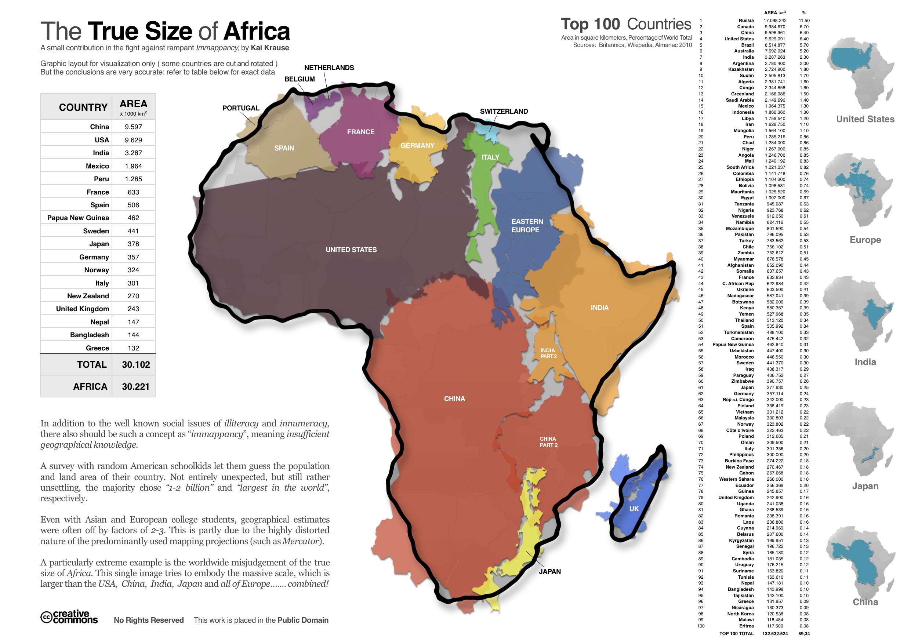
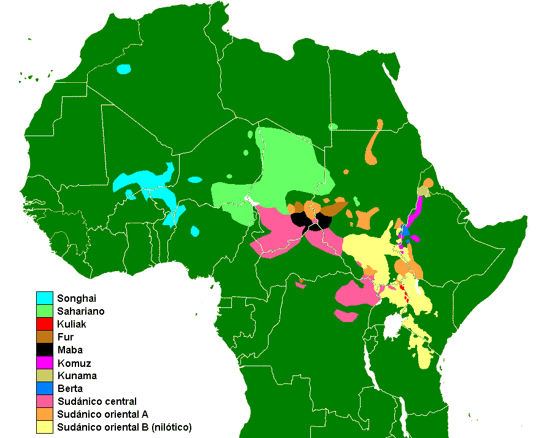
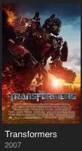
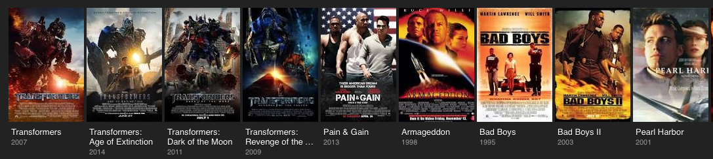
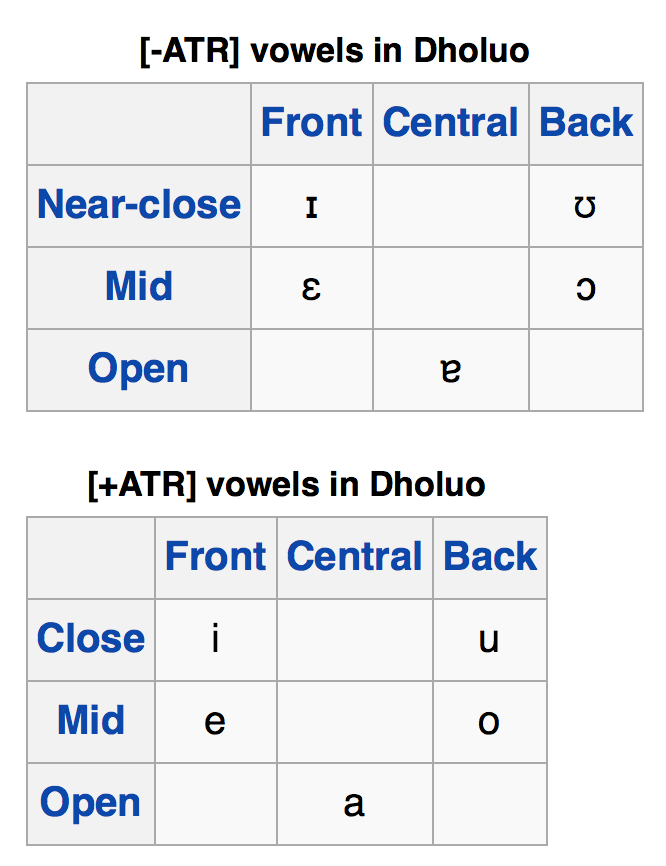

Why typology is really hard in Africa
“Nilo-Saharan”
Two common features in African Languages
Songhay languages/Zarma
Luo
Kuliak
Although I haven’t said it explicitly, this course is all about Typology
The process of comparing languages and establishing relationships and universals among them
Sometimes, these claims are regional
“Turkic languages are agglutinative”
“Semitic languages use template morphology”
Sometimes, they’re universal
“Languages with SOV order are postpositional”
“If a language has the category of gender, it always has the category of number.”
These are from Greenberg’s Universals
Typological information is useful, but requires hard work!
This is an even bigger problem for Africa because…

1.1 billion people live in Africa
2000+ languages spoken in Africa (much higher, by some estimates)
Nigeria alone has 500+ languages
Entire families of languages are endangered
20 out of 54 countries currently have US State Department Travel Warnings
Corruption is often a problem
Getting to your language’s speakers from a transit hub is non-trivial
There’s less data to compare, less research being done, and less funding to pay for it.
This means that our language groupings are a bit looser in Africa than elsewhere.
… but we still do our best!
Afroasiatic
Nilo-Saharan
Niger-Congo
Khoisan

Afroasiatic and Niger-Congo are pretty well accepted
Khoisan has all the vaguely isolating, clicky languages Greenberg couldn’t place elsewhere
Nilo-Saharan has been called “Greenberg’s Trashcan”, as it has the rest
Today, we’re working with…
Spoken by ~39 million (or more!) speakers
Loosely grouped, typologically speaking
Very diverse (almost as much so as IE)
Contains some important (and cool!) languages and families
Luo (~6 million speakers)
Kanuri (4 million speakers)
Songhay (3.2 million speakers)
Maasai (1 million speakers)
Kuliak subgroup (~15,000 speakers)

| ### Features of Nilo-Saharan Languages |
| * Singulative/Collective Number System |
| * … |
Singulative/Collective Number System
…
“Bad movie”

“Bad movies”

(Armageddon was OK, I guess)
The default for a word in Singular/Plural systems is singular.
In a Singulative-Collective System, the default is plural
ŋɛɛti ‘lice’

|
|
|
|
|---|
ŋɛɛti-n ‘louse’.
|
|
|---|
So, in Nilo-Saharan Languages, plural is usually the default, and singular needs to be marked.
Beyond that, there aren’t really specific features across Nilo-Saharan.
… but there are some features present in many Nilo-Saharan languages
Level-based tone systems
ATR Vowel Systems and Harmony
Changes in pitch during the word change the meaning of the word
Level (or “register”) tone - Tone is categorized by pitch “levels”
Contour Tone - Tone is categorized by shape and pattern of pitch

Very common in African languages
Usually “High” and “Low”
Yesterday - “bi”
Wound - “bi”
(Zarma also has rise and fall, but I couldn’t find recordings of it)
Tone is a property of the word
Intonation does not change the meaning of a morpheme
English has intonation, but not tone!
Now, our other feature…

Vowels with Advanced Tongue Root are “+ATR”
Similar to the difference between the English /i ɪ/ (“beet” vs. “bit”), /u ʊ/ (“boot” vs. “book”)
In ATR languages, it’s really important

When all vowels in the word must be either +ATR or -ATR
ɑkɪdɔŋ - “to castrate”
ATR Harmony is common throughout Africa
Singulative-Collective Number Systems
…
ATR in vowel systems
Level tones!
“Uh, OK… but why did you use”to castrate” as an example there?“
Because it’s the best example I found
Actual Sentences Elicited during ‘Field Methods’ in the CU Linguistics Department, Spring 2007
ai feidzi woy de no yon go
‘This is indeed my female sheep there’
| a goga dei feidzi za susube za kalichini |
| ‘He was sheep-buying from morning to night’ |
ai do: na ginə kar
‘I used to be hitting you (regularly)’
ai ginə kar chei bo:bo:
‘I will be hitting you regularly in the future’
fawoka na feidziyama bío: kar
‘The butcher hit the bad black sheep’
ai go fu:
‘I am at home’
ai ga fu:
‘I am going to fart’
(OK, let’s learn something not obscene in Zarma!)
Nilo-Saharan, spoken in Niger
The most widely spoken Songhay language
SOV order
Vowel length
| Indefinite | Definite | Demonstrative | |
|---|---|---|---|
| Singular | -∅ | -ǒ or -ǎ | -ô |
| Plural | -yáŋ | -ěy | -êy |
Spoken by around 3.5 million people in Kenya and Tanzania
ATR Harmony
Level Tone
Differentiates “Alienable” and “Inalienable” possession
cho-go guok
bone-POSS.ALI dog
‘the dog’s bone’ (which it is eating)
cho-k dhiang
bone-POSS.INALI cow
‘a cow bone’
A sub-family of Nilo-Saharan, three languages
Ik - 10,000 speakers
Soo - 500 speakers and falling
N’yangi - ~1 speaker
Sam Beer will be talking about his (mis)adventures in Kuliak next Wednesday
Typology is tough
Africa’s got four main language families (we think)
Nilo-Saharan is big, and diverse
ATR and Tone are common in African language
Zarma is awesome
{kind=link}